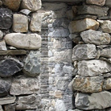
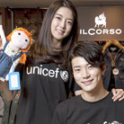
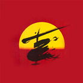

CSR
Sharing beyond boundaries of culture/arts/environmentLF defines sharing as love for people, society & culture, and nature. We are committed to carrying out sustainable CSR activities.
- LF POINT
- “The only golf point that never existed in the world!” LF POINT is a new golf point system that evaluates players by applying an objective standard that is similar to the KLPGA official records, and scores would then be calculated accordingly. In 2013, LF POINT started off with SBS Golf and has since challenged female Korean golfers. The top eight players play in the LF POINT Queen of Queens Match after the end of the season to fight for the title of “golf empress.”
http://www.lfpoint.com/
- “Namaste! Say Hello in the Mountains” Campaign
- Lafuma, in cooperation with the Korean Alpine Club, is running the “Say Hello in the Mountains” campaign as the first part of its long-term project to instill a hiking culture in Korea. The “Namaste! Say Hello in the Mountains” campaign by Lafuma was conceived by observing Himalayan trekkers who would often say “Namaste” to each other. Lafuma hopes to build on the campaign and have hikers exchange simple greetings, such as “hello,” “nice to meet you,” and “stay health.” Anyone hiking in the mountains can voluntarily be part of the campaign. The program does not coerce or attract participants by giving benefits. Rather, the program hopes to naturally instill this culture in Korea.

- The most beautiful broadcasting station in the world
- Lafuma has co-established a radio station with MBC and KOICA under the slogan, “the most beautiful broadcasting station in the world” in Jomsom, located at an altitude of 3,000 m above sea level, the Himalayas, Nepal.
The only road connected to the outside world is the way to Muktinath, a sacred Hindu place. Nonetheless, the area is in a dire situation where power failure occurs every day. What the people in Jomsom would die for is nothing but information.
“The most beautiful broadcasting station in the world” will not only become the central hub of information for Jomsom people but will also be used as a disaster relief tool for trekkers who climb Annapurna.

- Love Festival
- The LF and Lotte Department Store have been co-organizing the Love Festival since 2009 where 12 LF leading brands in 7 Lotte Department Stores donate 1¬2% of the proceeds from sales to various UNICEF campaigns, such as “Stop Malaria!” (2009), “Schools for Africa” (2010), and “Horn of Africa” (2011).
- Pet Adoption Campaign
- HAZZYS Accessories has actively engaged in encouraging adoption and protection of abandoned dogs, an emerging social issue.
HAZZYS Accessories and CéCi magazine co-opened a gallery-cum-pet café in October 2012, and exhibited six pet illustrations given by three illustrators as talent donation. There were also photo shoots of actress Jo Yoon Hee with her adopted dog and a dog in foster care.

- Nurturing Art Talents
- As part of the London Art Project, HAZZYS held the New Artist Contest in 2011 to discover and sponsor artistically talented children.
The campaign began with the creation of a Facebook page where one “like” will equal to an amount of KRW 1,000 for the artistic talents. As a result, 5,581 likes were accumulated and HAZZYS delivered art supplies, such as paints and foam clays, along with musical instruments, such as flutes and guitars, to 5 child centers, including the Hanuelpum Child Center in Nowon-gu, Seoul.
- MAESTRO & Friends Project
- MAESTRO, for the first time in Korea, has officially sponsored the “Maestro & Friends”, the fan club of Maestro Myung-whun Chung, for three years from August 2005. The sponsoring helped Maestro Chung’s musical activities, developed music education to students and people in general, supported the underprivileged, and promoted various social activities like protecting the environment.
- London Symphony Orchestra in Korea
- DAKS MEN sponsored the London Symphony Orchestra concert in Korea in 2006.

- Musical, "Miss Saigon"
- HAZZYS sponsored the premiere of Miss Saigon in 2006